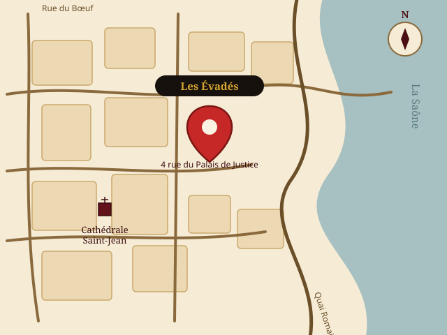

Vieux-Lyon, 5ᵉ arrondissement
Comment venir jusqu'à notre planque ?
Notre bouchon se situe au cœur du Vieux-Lyon, à deux pas de la cathédrale Saint-Jean, du théâtre gallo-romain et des quais de Saône.
Adresse :
4 rue du Palais de Justice
69005 Lyon, France
En voiture
Parking Saint-Jean — 25 quai Romain Rolland, 69005 Lyon.
Parking Saint-Georges — 6 place Benoît Crépu, 69005 Lyon.
En métro
Ligne D, arrêt Vieux Lyon – Cathédrale Saint-Jean, à quelques minutes à pied.
En bus
Plusieurs lignes desservent le quartier Saint-Jean et les quais du Vieux-Lyon.
Accès PMR
Notre restaurant est accessible aux personnes à mobilité réduite.

Horaires
Nos horaires d'ouverture
Lundi10h–14h3018h–22h
Mardi10h–14h3018h–22h
Mercredi10h–14h3018h–22h
Jeudi10h–14h3018h–22h
Vendredi10h–14h3018h–22h
Samedi10h–22h
Dimanche10h–22h